来源：https://hxrdzf4a0ay.feishu.cn/docx/OU9JdcT0aoWnBMxFCRKcjZdSnuh
【互联网IP】聚川（原IP小鱼）
【现实地址】河南
【思维逻辑】互联网暴利收益，暴力引流，发烧友
【早期经历】
✔咸鱼有无货源，螺旋起号矩阵日收益2K，美女号全自动变现，单号日跑1K收益。
小红书虚拟资源，日收益600+。
✔单号单人暴力引流300+，均日引流单人一天200+
【我可以提供的】
✔视频类项目拆解。引流创业粉，我自己的一些经验。
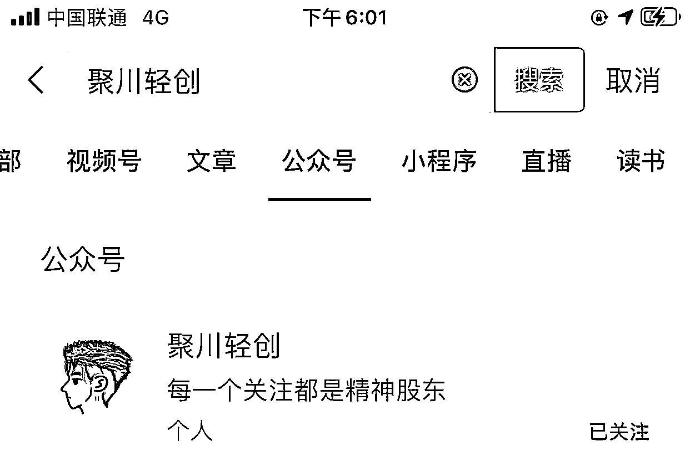
本期我将会以，目前网赚大环境，来跟大家进一步分析，我们为什么要去做B站。
以及B站系列实操视频，文章过长希望大家可以耐心看完，期望对大家引流会有一个提升！
大家好我是小鱼。分享下，我近期已落地，除抖快以外。引流最直接，最暴力的一种打法。
B站暴力引流高质量创业粉
抖音目前来说已经做不下去了，不管口播，还是项目拆解。你蓝不蓝V，引不引流一样都是【ta】号。
快手赛道拥挤起号不太容易，相对快手引流会比抖音好点，但是也避免不了【ta】号。
这里大家做过的应该都清楚，抖音目前还没去做的，强烈建议大家不要再去做了，做一个号si一个号。
如果真的感兴趣想去做的，建议去发快手，小红书，微信视频号，B站，流量也还不错。
但是相对来说没有我今天要分享的引流效果直接。
目前短视频长视频平台呈现三足鼎立的场面
抖音 快手 B站
三大站B站日活达已经接近1亿人，不同抖音快手的内卷场面。
B站相对来说赛道道理非常宽，同时三大站创业粉，粉质量排比∶B站>抖音>快手
我接触过各式各样的创业粉，抛下知乎豆瓣外，B站是我目前放眼看到，创业粉质量最高的一个平台。
粉丝素质高，付费意识强。相对于之前我感觉B站二次元多，粉丝质量差的看法，完全颠覆。
放几张图大家感受下。
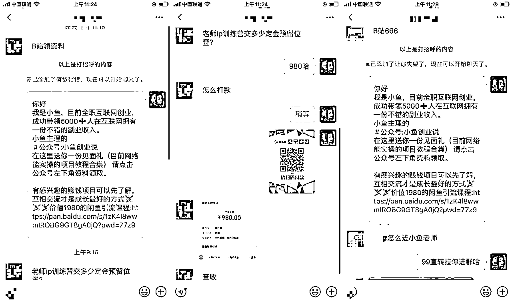
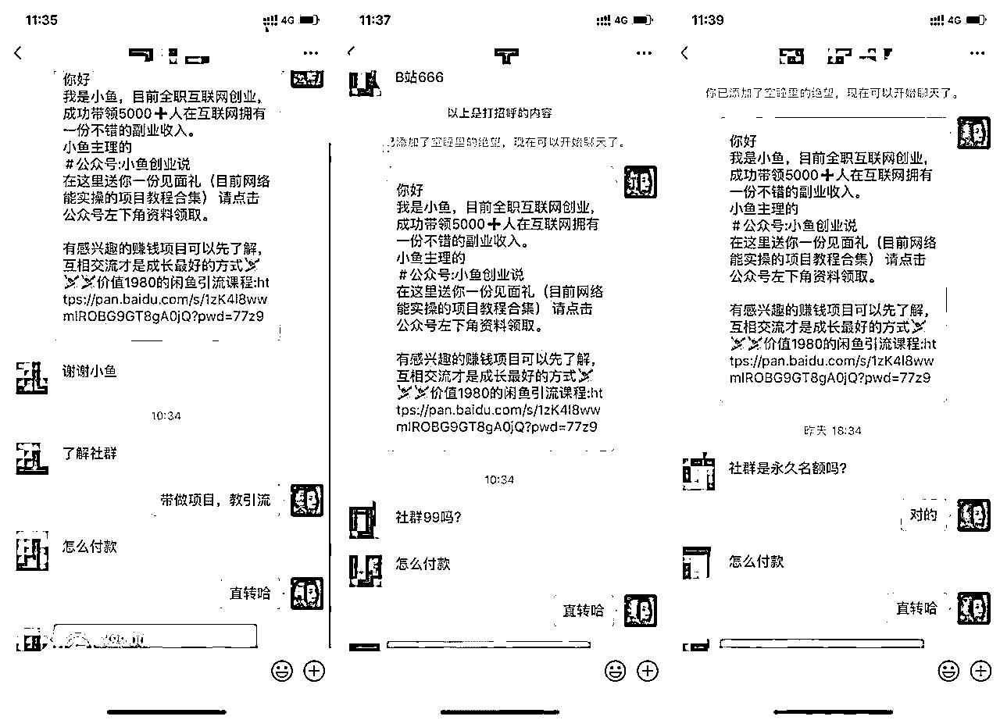
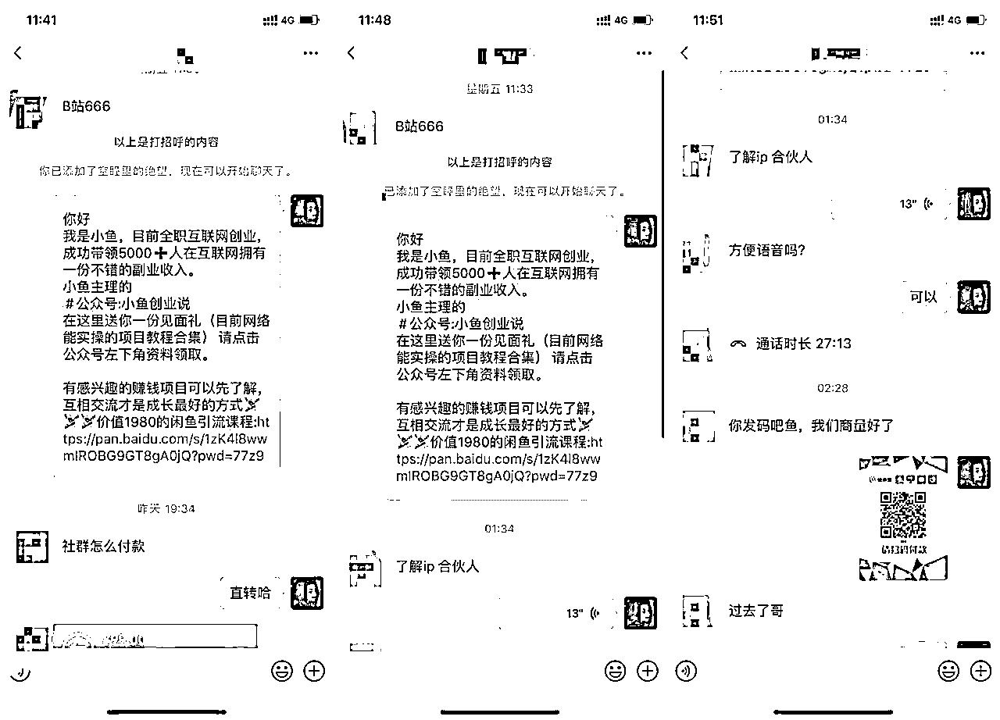
很多付费进社群的，就不一一展示了，B站来的总是付费意识是很强的。转化率在百分之15左右，
也可能是我开低客单社群的原因，付费率很高。
强大的社区氛围：B站致力于打造一个良好的社区氛围，为用户提供交流和互动的平台。
用户可以发布评论、弹幕、留言等，与其他观众和创作者进行互动，分享自己的想法
和评论。
创作和投稿平台：B站为创作者提供了一个优秀的平台，鼓励用户原创内容，并通过投稿
的方式发布到平台上。这使得更多的创作者有机会展示自己的才华，获取关注和认可。
强大的数据支持：B站积累了大量用户行为数据，通过对这些数据的分析，可以精准地进
行内容推荐和个性化推送。这有助于用户发现更多符合自己兴趣的视频内容，提高了观
看体验。
我们可以直接主页个人介绍，直接挂自己公众号和微信号，B站目前没有这方面的限制，
所以B站目前必定是一个无限制嘎嘎引流的风口，大家一定要抓住。
基本上一个上千播放量的视频，能够给你引流200左右的创业粉。
一.寻找项目拆解视频，轻抖提取文案，GTP洗稿子
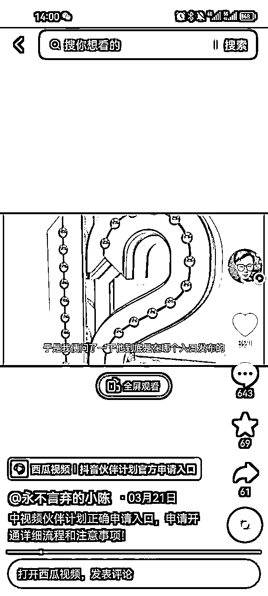
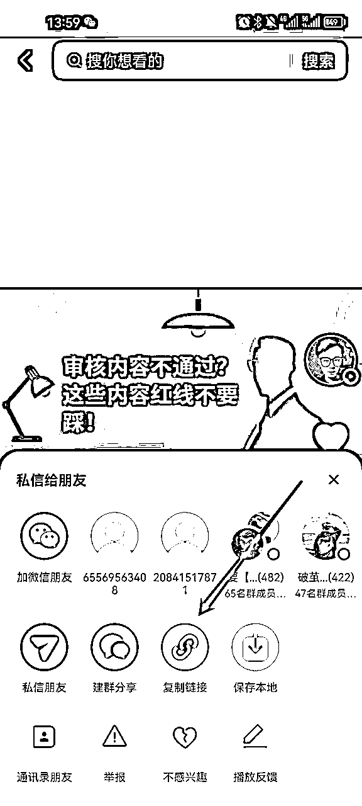
免费版GTP
轻抖提取文案步骤
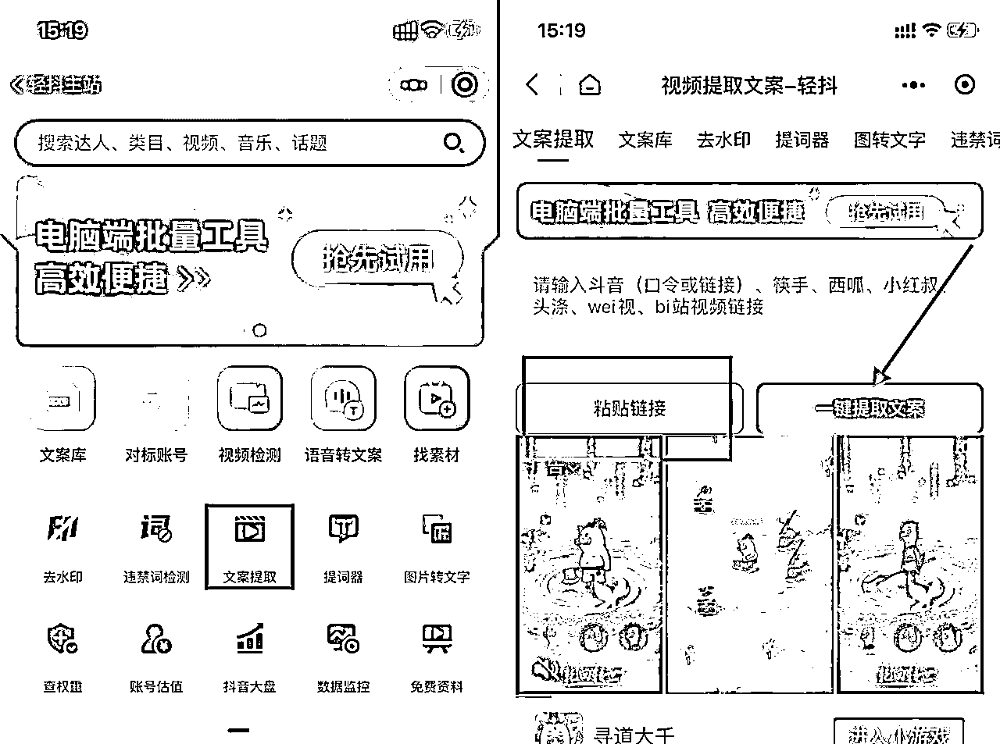
二.直接微信搜索框搜索相应的项目名称，比如支付宝中视频计划
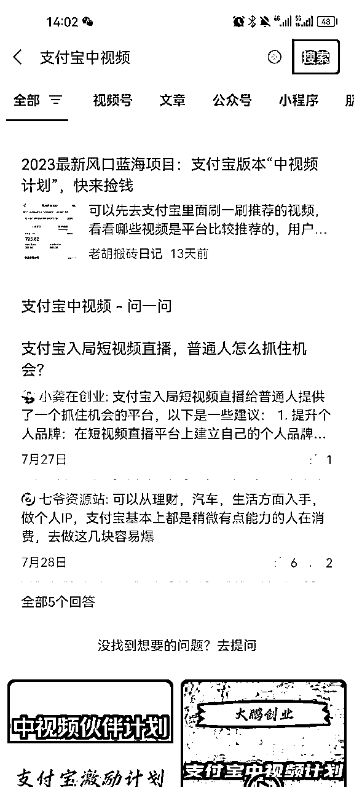
然后随便找一个文章，点开，然后把他的文章伪原创一下，或者直接搬运也可以，图片文案啥的都是现成的。
可以直接使用飞书云文档，把提取的文案给放进来，稍微修改，然后配上一些图片。
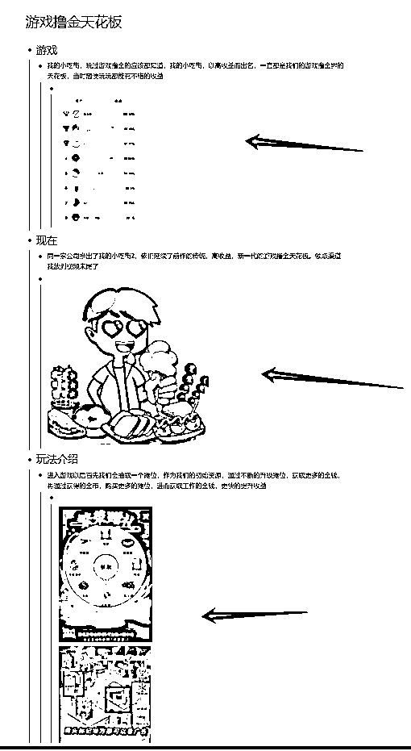
文档字不需要太多，大概有个一二百字就可以。
我们用这个文档录制视频，制作成我们发布的内容。录制工具可以用到EV录屏。这是免费的录制工具，非常好用。
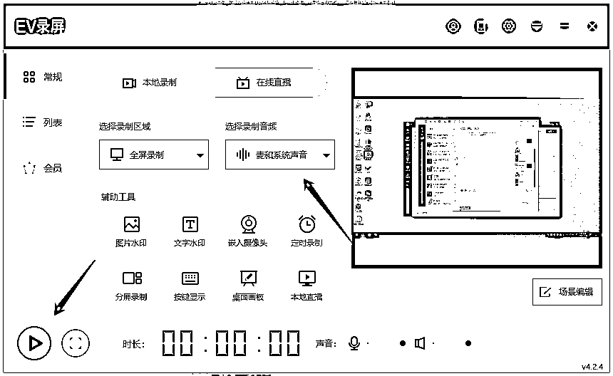
ps：这里我们要选择麦和系统声音，这样才能把我们的声音录制上去。
接着就是开始对着文档录制视频，时间控制在一到两分钟即可。
注意细节：我们把项目介绍完以后，记得加一句，软件(就是你留的钩子)放到视频最后了，这样可以提高视频的完播率。
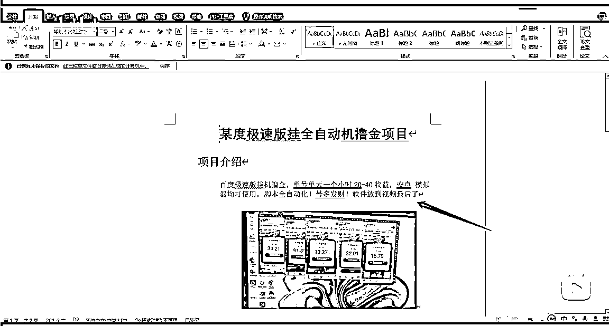
然后在视频的结尾，一定要说三连加关注，评论区扣666，这样让关注帮我们做数据，更容易把视频推起来，
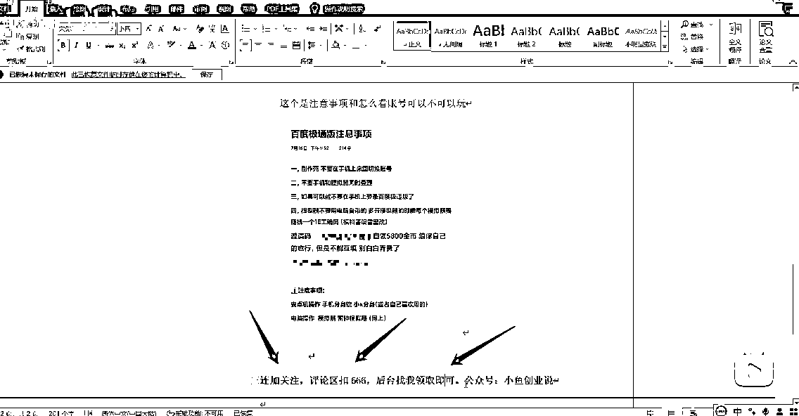
我们先准备好B站账号（账号注册直接手机号注册就行，B站需要答题成为正式会员，大家可以百度搜索答案，很简单的，基本上很轻松就能通过，这里不在细讲了）
然后扫码登录到电脑上，然后点击右上角投稿
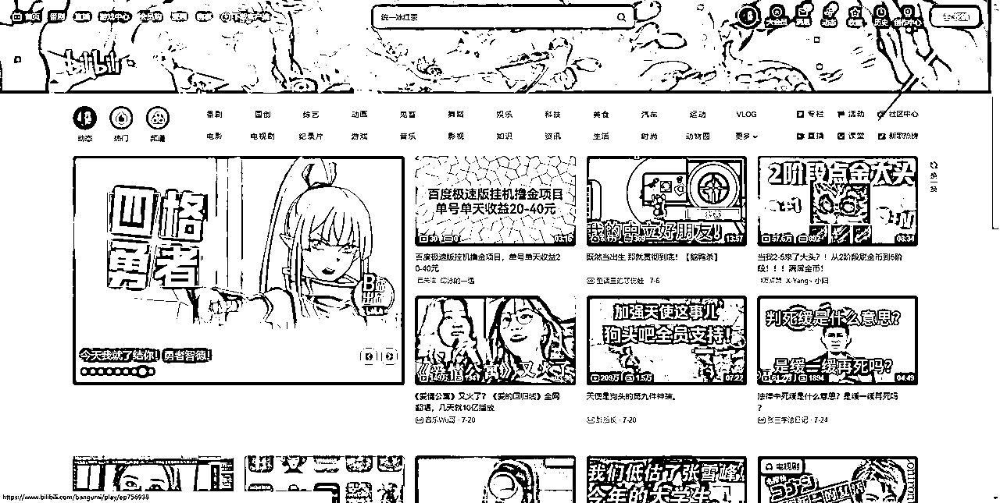
接着点击上传视频
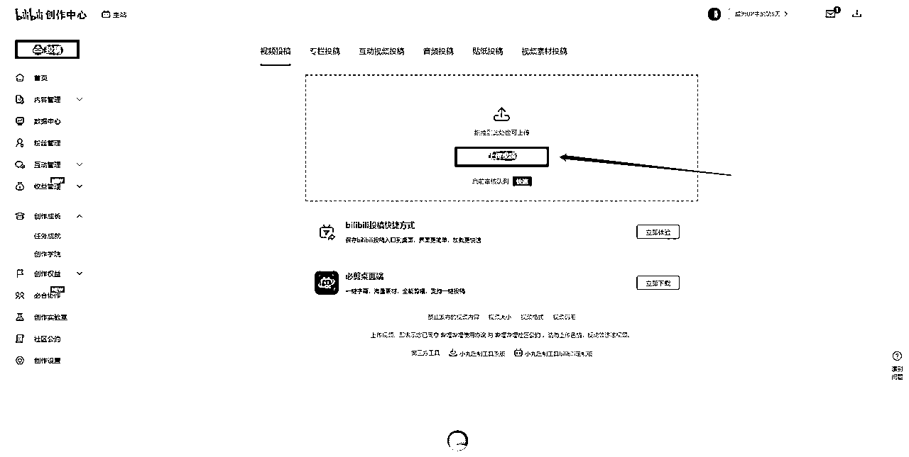
选择我们录制的视频
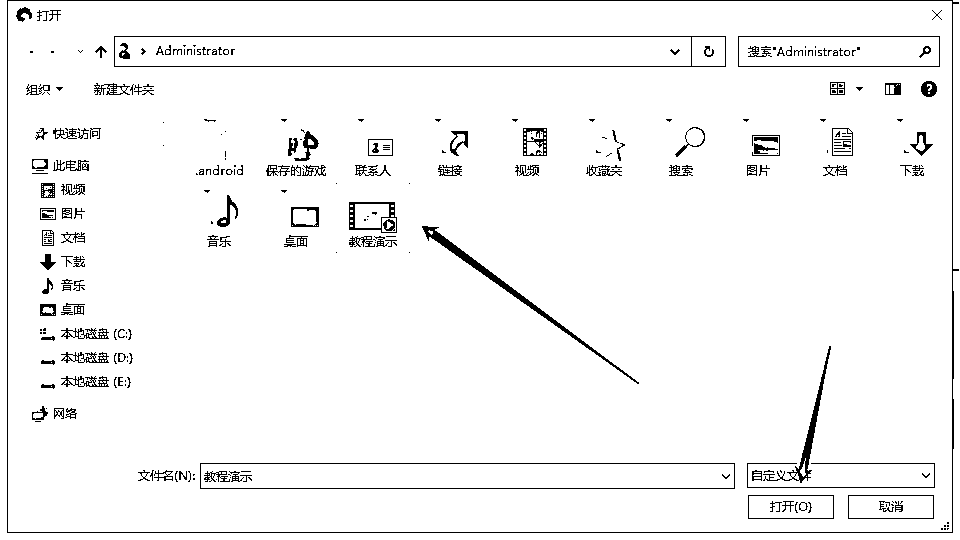
给视频起一个合适的标题，比如：小游戏掘金天花板，单设备一小时20+收益
然后标签用推荐的即可，简介直接模仿标题就行。
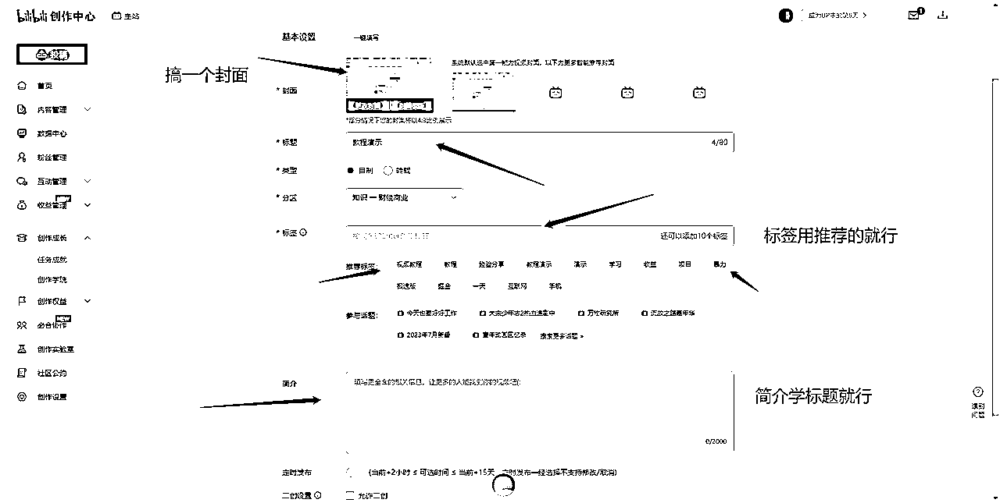
最后上传一个适合的封面，可以直接用美图秀秀制作，选择纯色的背景，然后加上你视频的标题即可
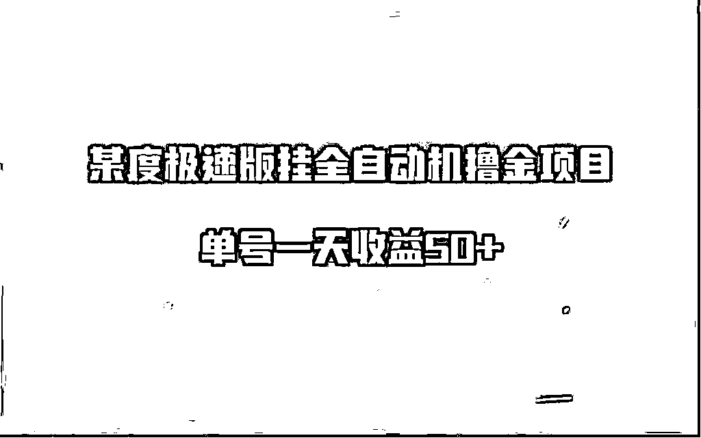
这里注意，B站封面是有限制的，大概是宽度不低于420，这里你最好按照他推荐的分辨率去选择底图，要不然到时候传不上去。
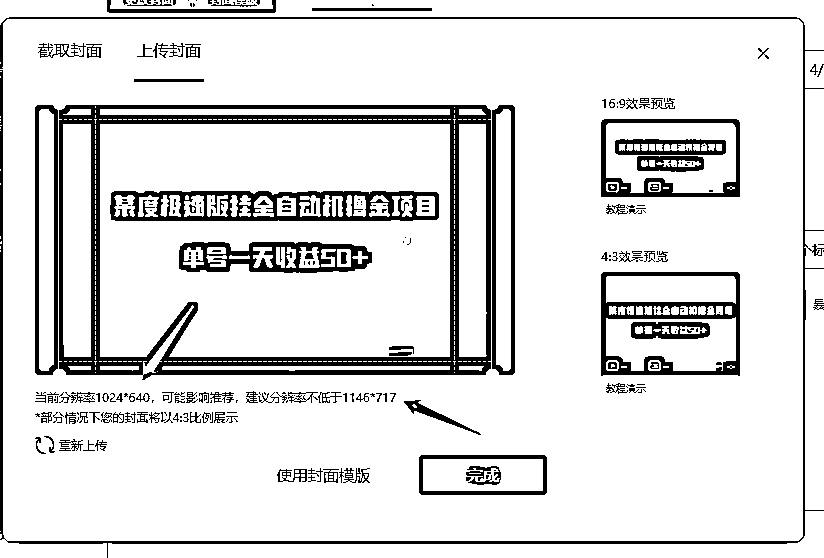
最后我们就直接点击立即投稿即可。
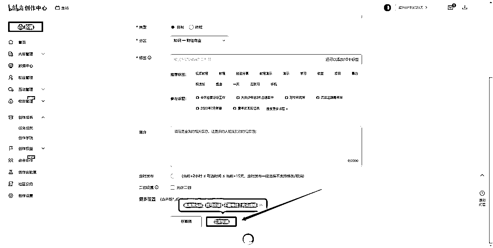
这样我们内容制作与发布就算完成了。
千粉之前，我们需要手动回复观众的私信，B站的私信你可以肆无忌惮的引流，直接让他们加你微信领取资料都是没问题的。
等到你有千粉以后，就可以直接设置自动回复，观众关注以后自动回复，实现自动化引流，瞬间化身全自动引流机器，超级方便！！！
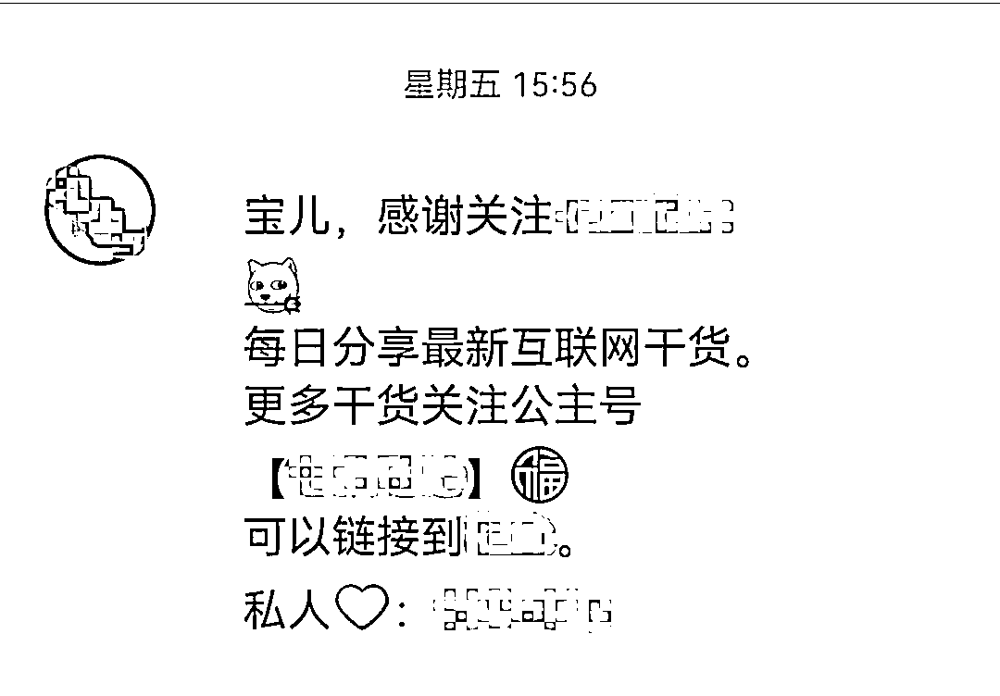
如何设置的话这里给大家放一个视频：B站如何设置自动回复
帖子字数比较少，但全是干货，大家看完就可以直接开始实操了。
我是聚川，欢迎与我沟通交流